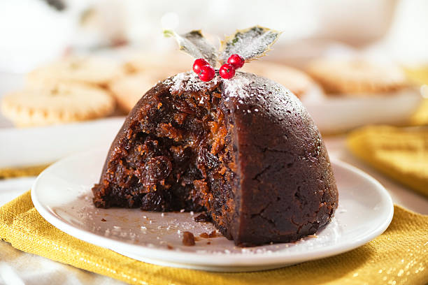

Mousse de Limão com Brigadeiro

Deliciosa mousse de limão com brigadeiro.
Ingredientes:Para a mousse:
1 lata de leite condensado
1 lata de creme de leite
1/2 lata de suco de limão
Para o brigadeiro:
1 lata de leite condensado
2 colheres (sopa) de manteiga
5 colheres (sopa) de achocolatado em pó.
Modo de Fazer: Mousse
1. Bata todos os ingredientes no liquidificador e reserve.
Brigadeiro
1. Coloque todos os ingredientes na panela e vá mexendo em fogo baixo.
2. Para essa receita, o ponto é um pouco antes do brigadeiro tradicional, um pouco mole ainda.
3. Coloque a mousse numa travessa e despeje o brigadeiro por cima.
4. Deixe gelar. Está Pronto!
Pudim de Natal

Delicioso Pudim.
Ingredientes: Para o Pudim: 1 xícara de uvas-passas
1/2 xícara de frutas cristalizadas (mistas)
1/2 xícara de cerejas em calda, picadas
1/2 xícara de nozes picadas
1/4 de xícara de conhaque ou rum
1/2 xícara de manteiga sem sal
1 xícara de açúcar mascavo
4 ovos
1 1/2 xícaras de farinha de trigo
1 colher de chá de fermento em pó
1 colher de chá de canela em pó
1/2 colher de chá de noz-moscada
1/2 colher de chá de cravo em pó
1/2 colher de chá de gengibre em pó
Pitada de sal.
Modo de fazer:Para a Cobertura (opcional):
1/4 de xícara de açúcar de confeiteiro
1 colher de sopa de água
Frutas cristalizadas e cerejas para decorar
Em uma tigela, coloque as uvas-passas, as frutas cristalizadas, as cerejas picadas e as nozes. Regue com conhaque ou rum e misture bem. Deixe essa mistura descansar por algumas horas ou durante a noite, para que as frutas absorvam o sabor do álcool.
Pré-aqueça o forno a 160°C. Unte uma forma de pudim com manteiga e reserve.
Em uma tigela grande, bata a manteiga e o açúcar mascavo até obter um creme fofo.
Adicione os ovos, um de cada vez, batendo bem após cada adição.
Peneire a farinha de trigo, o fermento, a canela, a noz-moscada, o cravo, o gengibre e o sal na mistura de ovos e manteiga. Misture bem até que todos os ingredientes estejam incorporados.
Adicione a mistura de frutas (incluindo o álcool) à massa e mexa até que estejam uniformemente distribuídas.
Despeje a massa na forma de pudim preparada e nivele a superfície.
Cubra a forma com papel alumínio e asse no forno pré-aquecido por cerca de 2 horas ou até que o pudim esteja firme e um palito inserido no centro saia limpo.
Remova o pudim do forno e deixe esfriar um pouco antes de desenformar.
Se desejar, prepare uma cobertura misturando o açúcar de confeiteiro com a água até obter uma pasta.
Espalhe a cobertura sobre o pudim e decore com frutas cristalizadas e cerejas. Está pronto!